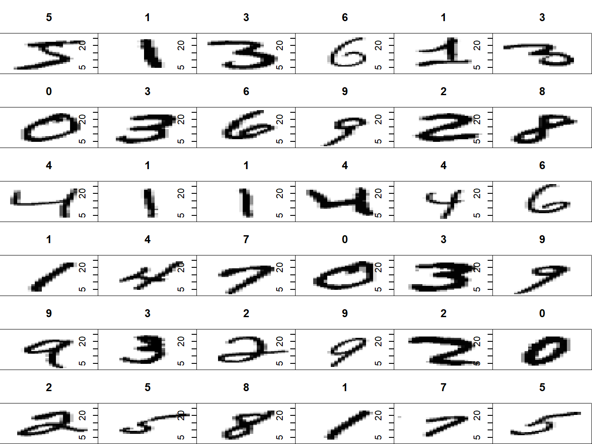
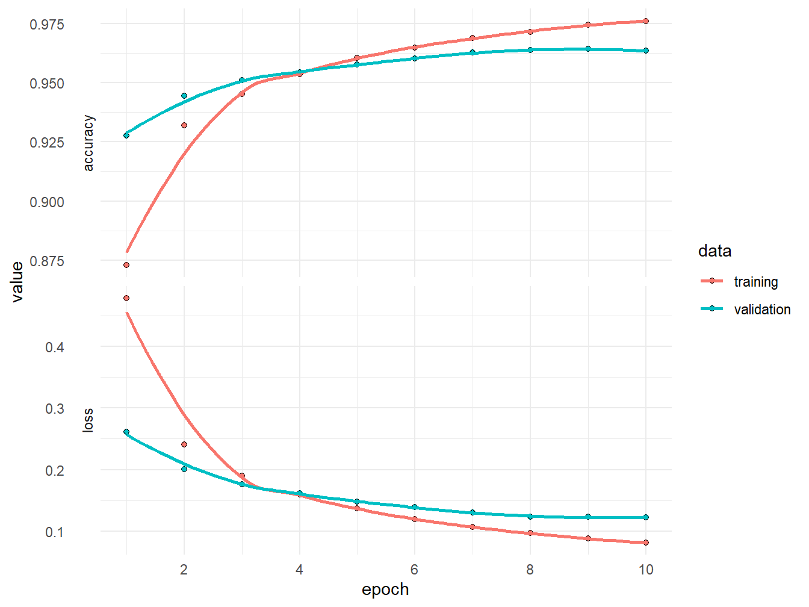
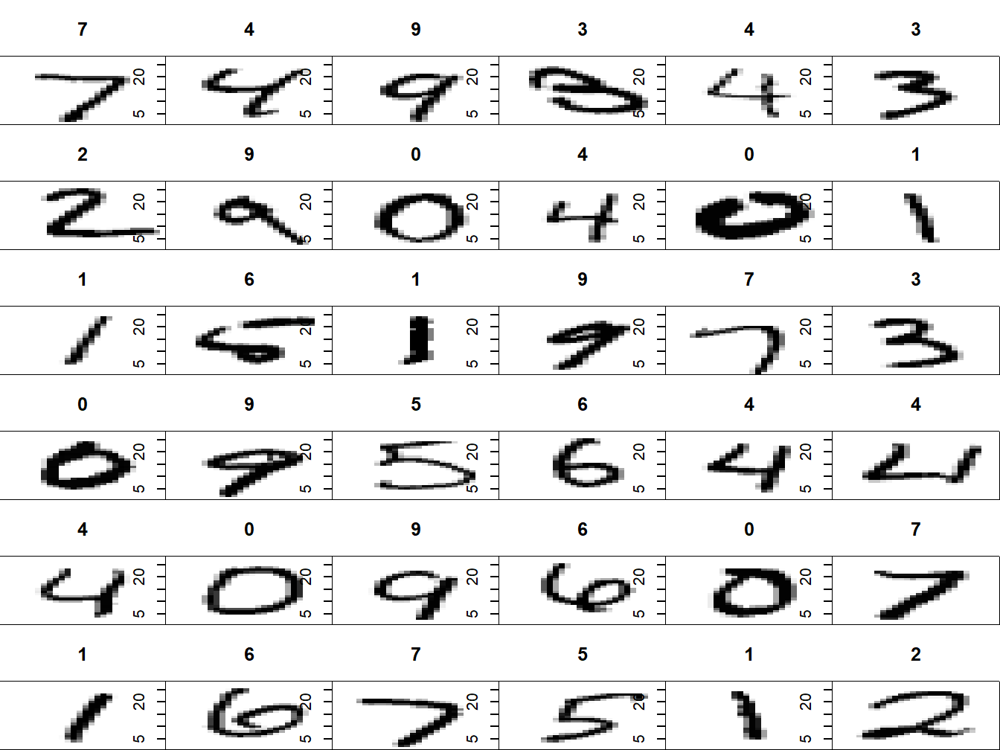

5.1 An application I
Let us see an example of how to implement a neural network classifier. We will use Keras, which is just a wrapper for the machine learning library Tensorflow. You may find tutorials and installation guide in the documentation. Just remember to install Keras3 instead of Keras. If this installation fails another option is to follow the instructions at the ISLR webpage
After that, it should be enough to
## Warning: package 'keras3' was built under R version 4.6.1Our goal is to classify hand-written digits from the MNIST database. The MNIST database is already divided in a training and a test set
mnist <- dataset_mnist()
x_train <- mnist$train$x
y_train <- mnist$train$y
x_test <- mnist$test$x
y_test <- mnist$test$y
Figure 5.1: Examples from MNIST
Each image is represented as a 28x28 matrix of pixel values between 0 and 255. We reshape each matrix in to a vector and scale the pixel value so that it is between 0 and 1.
dim(x_train) <- c(nrow(x_train), 784)
dim(x_test) <- c(nrow(x_test), 784)
x_train <- x_train / 255
x_test <- x_test / 255The \(y\) variables are given as an integer between 0 and 9. We transform it to a vector of dummy variables.
Now we specify a 2-layer NN with Relu activation in the hidden layer and softmax in the last layer.
model <- keras_model_sequential()
model %>%
layer_dense(units = 50, activation = "relu", input_shape = c(784)) %>%
layer_dense(units = 10, activation = "softmax")We compile the model by specifying the loss and the optimization method.
model %>% compile(
loss = "categorical_crossentropy",
optimizer = optimizer_rmsprop(),
metrics = c("accuracy")
)Here, cross entropy loss is just the negative of a multinomial log likelihood. The optimizer, RMSprop, is a way of choosing the learning rate adaptively. Now we train the NN.
## Epoch 1/10
## 375/375 - 1s - 3ms/step - accuracy: 0.8729 - loss: 0.4776 - val_accuracy: 0.9276 - val_loss: 0.2610
## Epoch 2/10
## 375/375 - 1s - 2ms/step - accuracy: 0.9319 - loss: 0.2403 - val_accuracy: 0.9444 - val_loss: 0.2003
## Epoch 3/10
## 375/375 - 1s - 2ms/step - accuracy: 0.9451 - loss: 0.1893 - val_accuracy: 0.9510 - val_loss: 0.1761
## Epoch 4/10
## 375/375 - 1s - 2ms/step - accuracy: 0.9537 - loss: 0.1591 - val_accuracy: 0.9544 - val_loss: 0.1612
## Epoch 5/10
## 375/375 - 1s - 2ms/step - accuracy: 0.9604 - loss: 0.1366 - val_accuracy: 0.9576 - val_loss: 0.1482
## Epoch 6/10
## 375/375 - 1s - 2ms/step - accuracy: 0.9648 - loss: 0.1197 - val_accuracy: 0.9602 - val_loss: 0.1390
## Epoch 7/10
## 375/375 - 1s - 2ms/step - accuracy: 0.9689 - loss: 0.1068 - val_accuracy: 0.9626 - val_loss: 0.1298
## Epoch 8/10
## 375/375 - 1s - 2ms/step - accuracy: 0.9715 - loss: 0.0968 - val_accuracy: 0.9638 - val_loss: 0.1237
## Epoch 9/10
## 375/375 - 1s - 2ms/step - accuracy: 0.9744 - loss: 0.0879 - val_accuracy: 0.9642 - val_loss: 0.1233
## Epoch 10/10
## 375/375 - 1s - 2ms/step - accuracy: 0.9760 - loss: 0.0812 - val_accuracy: 0.9634 - val_loss: 0.1227
Figure 5.2: Training and validation loss/accuracy for each epoch
We see that the validation accuracy is still increasing, so we could probably run more epochs. Let us evaluate the model on the test set.
## $accuracy
## [1] 0.9683
##
## $loss
## [1] 0.1082031The accuracy is 97%, which is not too bad. Let us make predictions on the test set and plot some of them.
## 313/313 - 0s - 955us/step
Figure 5.3: Predictions on the test set